In this tutorial we will go through
The dataset consists of two kinds of human kidney samples. Some of the samples have been taken from a normal kidney tissue, and some of the samples were derived from cancerous renal cell carcinoma tissue. The aim of the study is to identify the genes that are differentially expressed between these two different tissues.
The data set used in this tutorial is available from the GEO database with accession number GDS505. Lenburg et al. have published their analysis in BMC Cancer, 3: 31.
Chipster reads in both text-formatted version 3 CEL-files and binary CEL-files.
Put all the datafiles in the same folder on, say, Desktop. In practise, it is easiest to read in a whole folder at the same time.
A blank Chipster session appears, once the program has started:
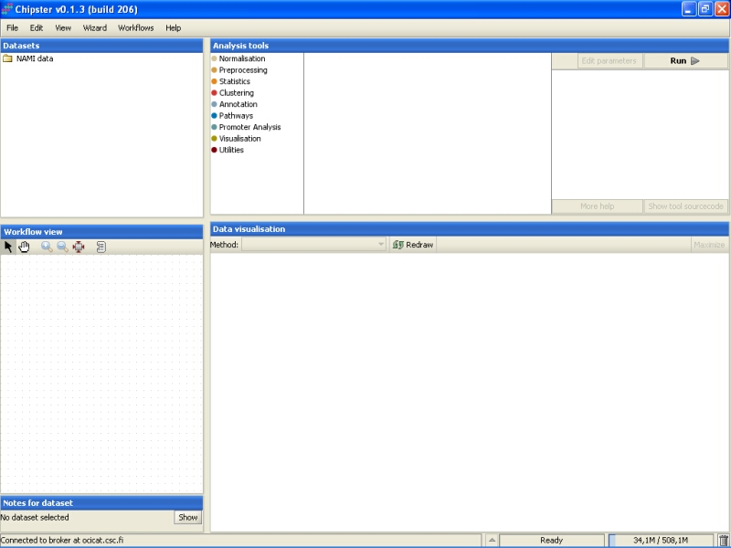To import CEL-files, go to menu File, and select Import Files:
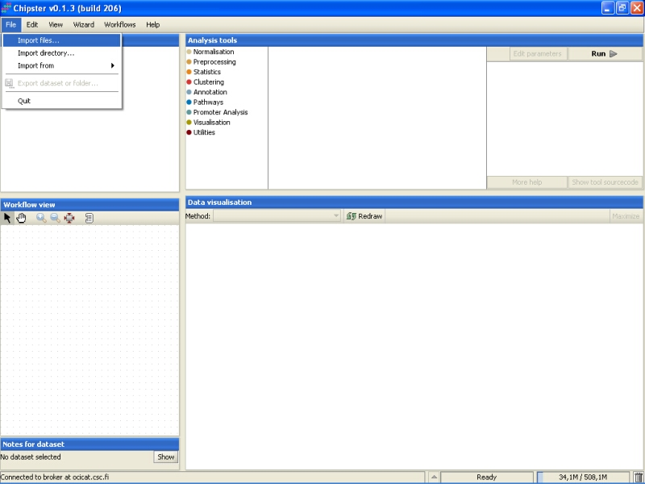Browse to the folder where the data is located:
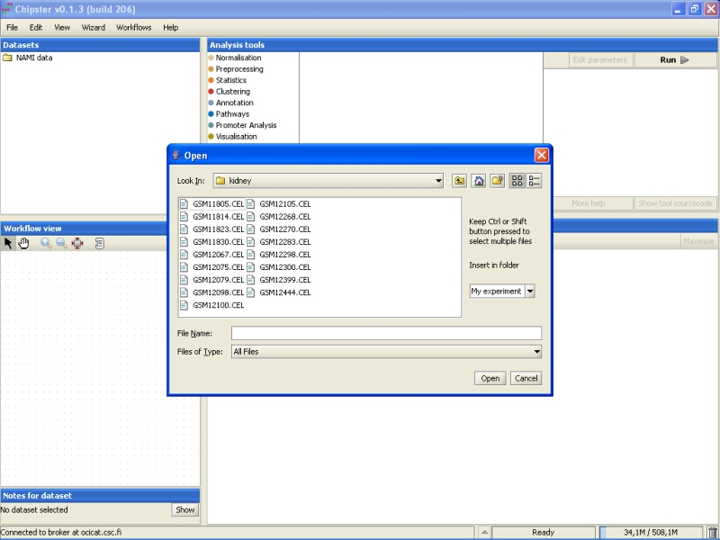Select all the files by clicking on the first file, and the last file while keeping the Shift-key pressed down. After selecting the files, click on the button Open to start the data import:
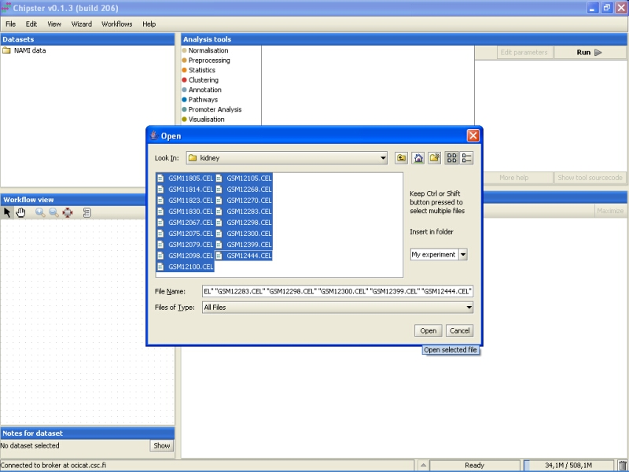Once the data has been loaded, you'll see a list of 17 files appearing under the Dataset view. The same set of files is also represented by a grey box with a text '17 files' appering in the Workflow View:
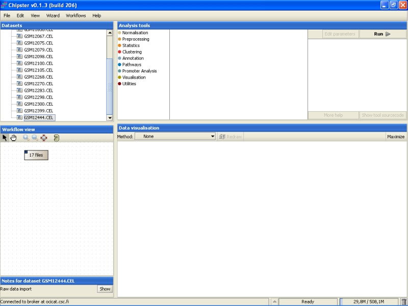The next step would be to preprocess and normalize these data.
Click on the grey box representing the files in the Workflow view. This selects all the files:
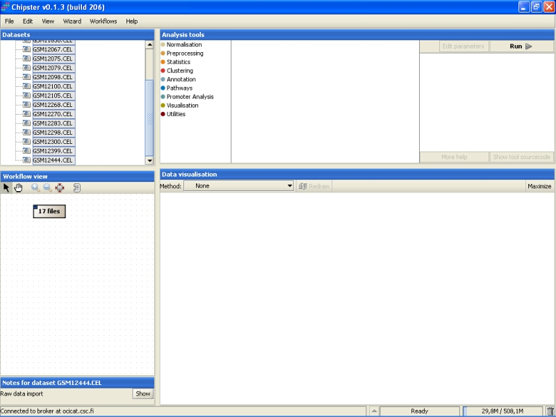Next, go to the Analysis tool list, and select the category Normalization. You'll see a list of preprocessing and normalization tools appearing:
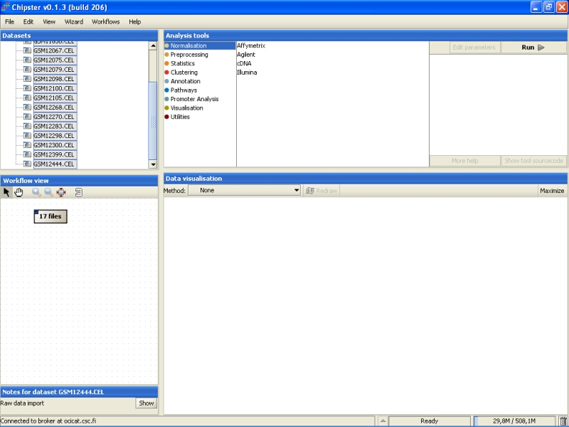Select the Affymetrix tool:
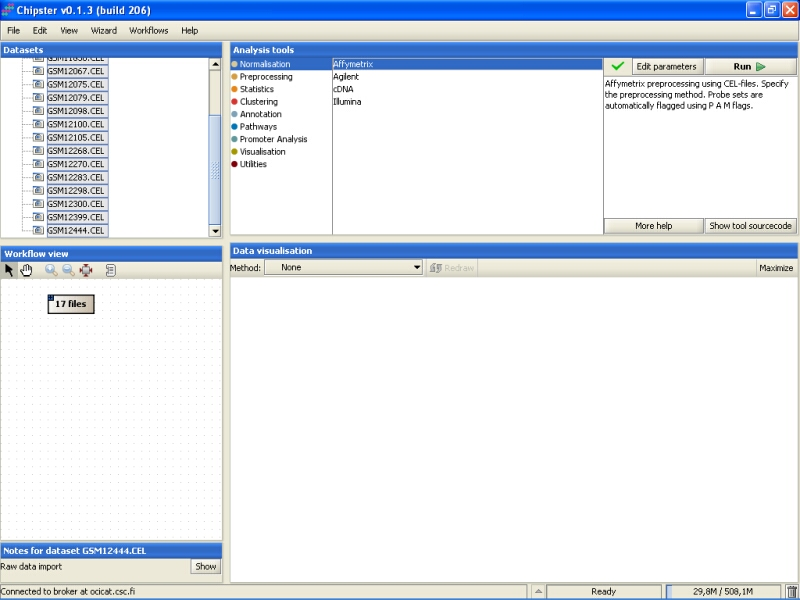To view the current settings and to modify them, click on the button Edit parameters in the top-right of the Chipster window. A list of parameters appears:
The current settings are fine for this particular dataset, so press the Run-button to start the tool. A moving blue bar appears on the bottom of the Chipster window to indicate that a job is running:
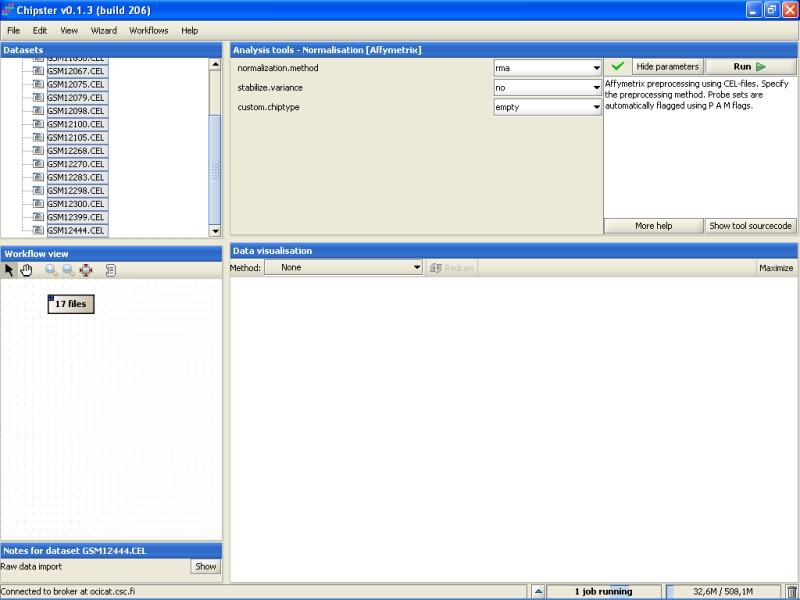It takes a couple of minutes to run the preprocessing and normalization, but once the results are ready they will appear under the Datasets and Workflow view. The normalized data set appears as a yellowish box in the Workflow view:
Before any real analysis, the phenodata of the dataset should be filled in. Phenodata is a description of the experiment - what are important questions that should be answered. Note the yellowish blob appearing next to the preprocessed and normalized data set in the Workflow view - it is the phenodata. Click on the blob to select it:
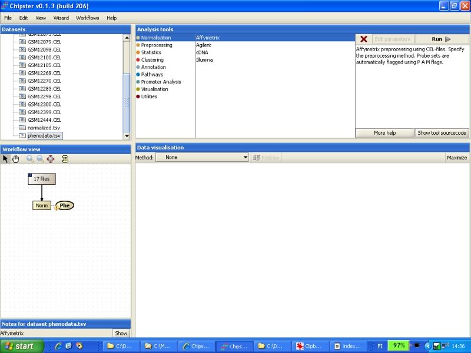Go to Data Visualization, and from the dropdown menu select the Phenodata editor:
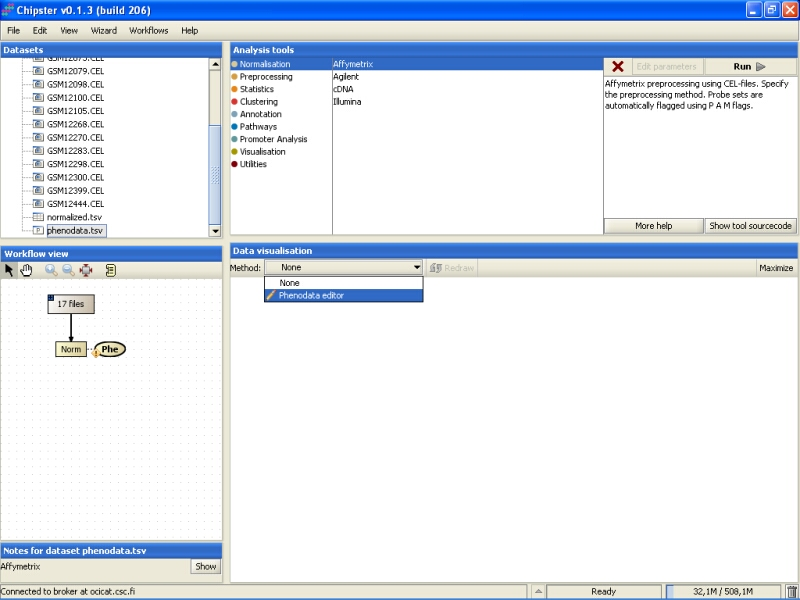This opens the Phenodata editor, where you should fill in the group column. Because the comparison of normal tissue to cancerous tissue was of principal interest in this experiment, we'll use the knowledge of the tissue type to fill in the group column. All the samples from normal tissue are coded with 1, and the samples from cancerous tissue with 2:
Once the phenodata column group is filled in, the exclamation mark disappears from the phenodata blob in the Workflow view:
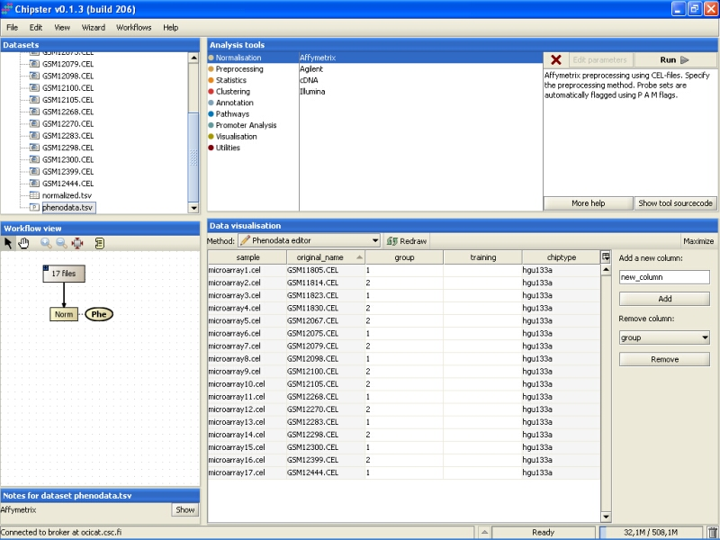Now you're ready to run some analysis.
This step might take a long time to complete, so you might consider skipping this section. Quality control will take about the same amount of time as preprocessing and normalization.
Affymetrix quality control is typically run on raw data. To make the basic quality checks, select all the raw data (CEL) files in the Workflow view, and use Affymetrix basic -tool from the Quality control category:
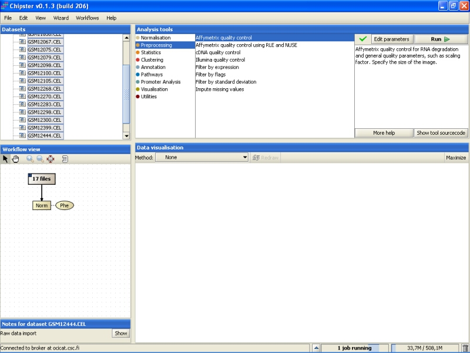It takes a few minutes to complete the quality control analysis. Once the analysis is ready two new yellowish boxes appear under the Workflow view:
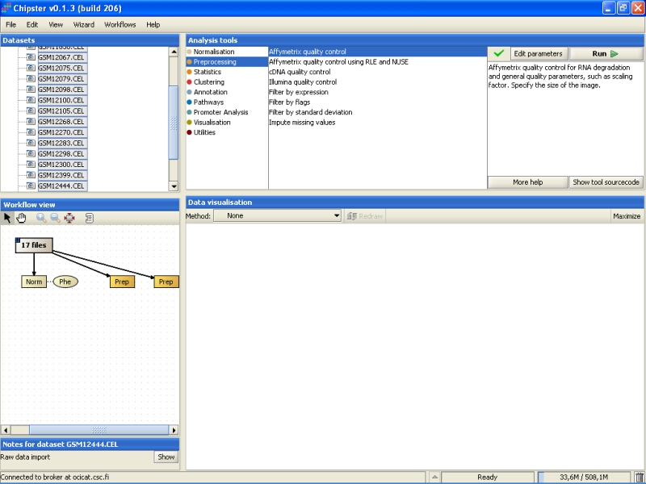Double click on the left Prep-labeled box to visualize the RNA degradation plot:
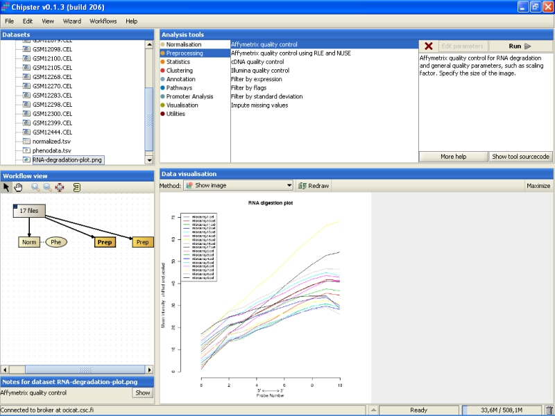To view a larger image, click on the Maximize button under Data visualization:

RNA degradation plot shows the mean expression from the 5' to the 3' end of the mRNA. Every chip is represented with a single line. In an ideal situation the lines would be flat, but it is usually not the case. If the lines are not flat, the slopes and profiles should be as similar as possible. There seem to be two slightly deviant chips in this experiment: microarray15 and microarray9. However, those are not too extreme, and are retained in the data set.
To make the plot smaller, click on the Restore button under the data visualization:
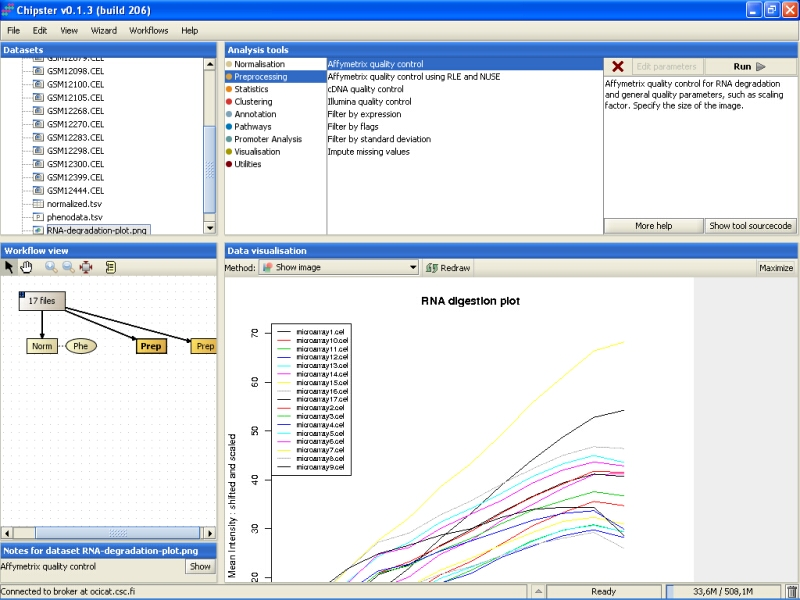To check the scaling factors, expression of GADPH and beta actin, and the percentage of present probesets and the average background, double-click on the right yellowish box marked as Prep (simpleaffy-plot.png):
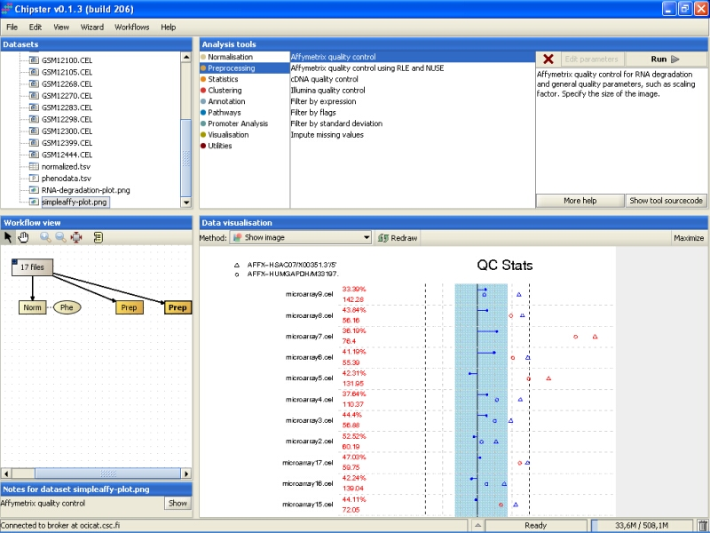You need to Maximize the image to see the plot better:
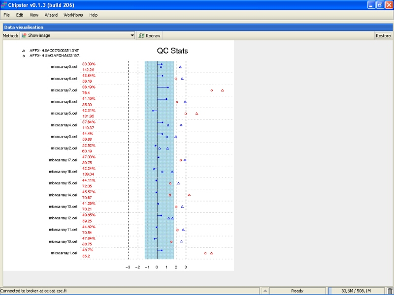QC stats plot reports quality control parameters for the chips. Different chips are separated by vertical grey lines in the plot. The red numbers on the left report the number of probesets with present flag, and the average background on the chip. The blue region in the middle denote the area where scaling factors are less than 3-fold of the mean scale factors of all chips. Bars that end with a point denote scaling factors for the chips. The triangles denote beta-actin 3':5' ratio, and open circles are GADPH 3':5' ratios. If the scaling factors or ratios fall within the 3-fold region (1.25-fold for GADPH), they are colored blue, otherwise red. The deviant chips are therefore easy to pick of by their red coloring.
All scaling factors are within the acceptable range, but some of the housekeeping genes fall outside the acceptable range. However, most of the chips having very deviant control gene expression are samples from cancerous tissue, and the quality control genes might represent the probably large gene expression changes showed by the cancer tissue. So, there is nothing too worrying in the quality control images.
We continue with the full data set to filtering out the uninteresting genes.
To filter the non-changing genes, select the normalized data set under the Workflow view:
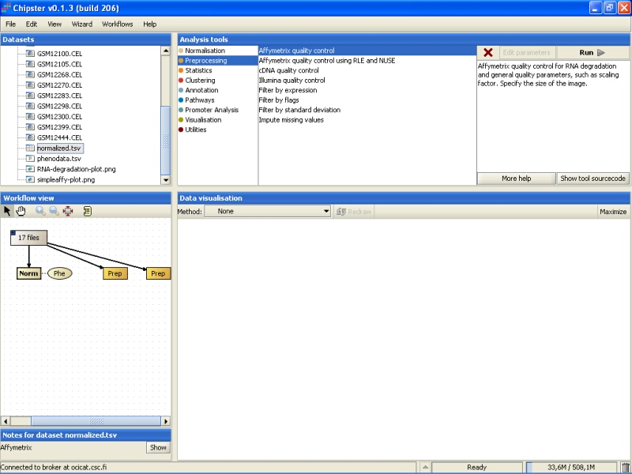One way to filter out the non-changing genes is to use filtering by standard deviation. The genes that show the lowest standard deviation are those that are not displaying much changes between the normal and cancerous tissues. To filter the genes based on standard deviation, go to the tool category Preprocessing, and select the tool Filter by standard deviation:
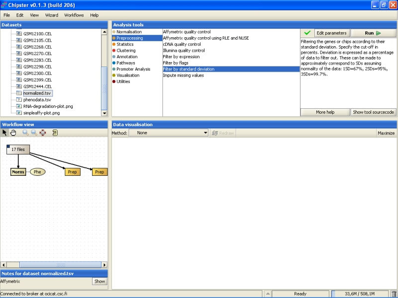By default the tool filters out 99.7% of the genes:
It would probably be better to leave a slightly larger set of genes for further studies, and here we will filter out 95% of the genes instead:
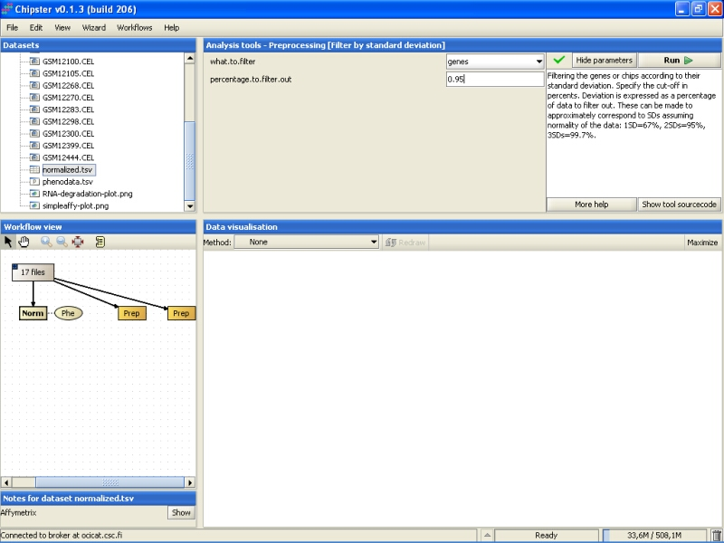After the filtering, a new data set is returned:

To see the genes that were retained in the filtered data, select the data set, and select Spreadsheet from the drop down menu under the Data visualization:
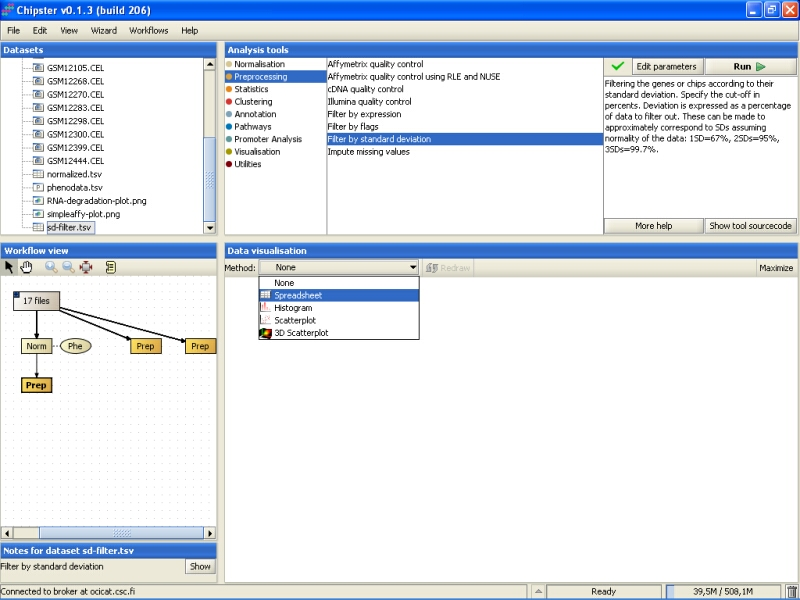The data is displayed as a spreadsheet, and the top row of the visualization says ' Showing 1115 of 1115 rows', so 1115 genes were retained after the filtering:
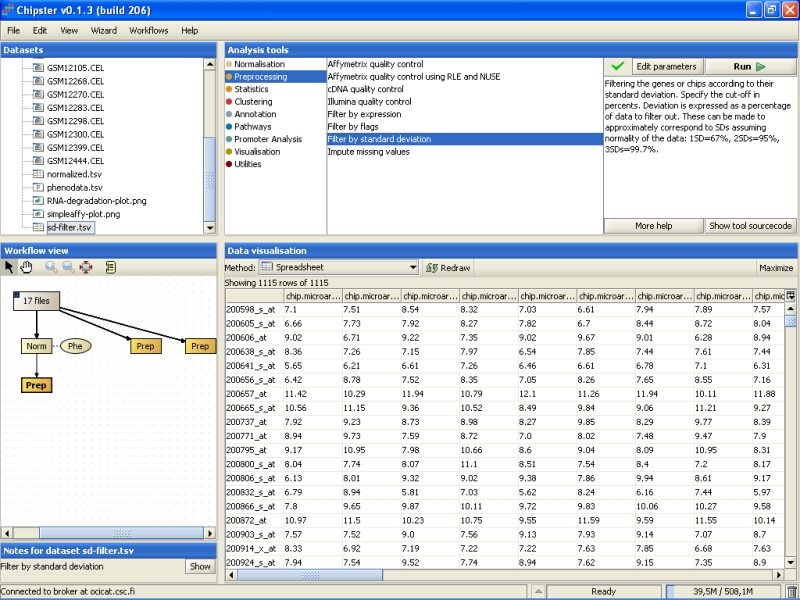This filtered data can then be used for statistical testing.
There are two groups in the data: normal tissue and cancerous tissue. The correct statistical test is the one intended for two groups. To run this kind of test, go to the tool category Statistics, and select the tool Two groups tests:

By default, the tool uses an empirical Bayes t-test for comparing the groups. This is a more sensitive test than the standard t-test, and hence preferred. In addition, Benjamini and Hochberg's false discovery rate is used for correcting for multiple tests, and a false discovery rate of 0.05 is used. It is advisable, at least initially, to run the test using these settings:
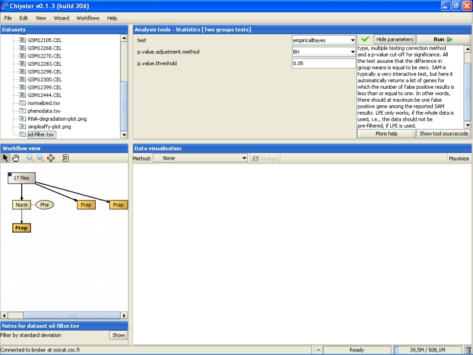After the analysis has finished an orange box appears in the Workflow view. If it is visualized as a spreadsheet, it becomes apparent that 878 genes passed the statistical test:
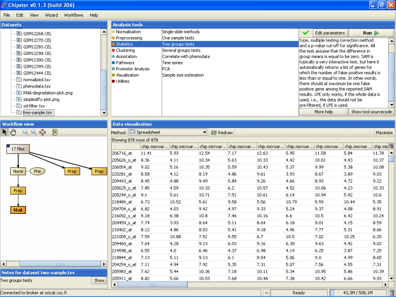In this tutorial we would like to get about 50-100 genes, because those will be validated using quantitative PCR, and 878 genes is too much work for that. To get a smaller amount of genes, we run the statistical test again, but using a lower p-value (0.00001):
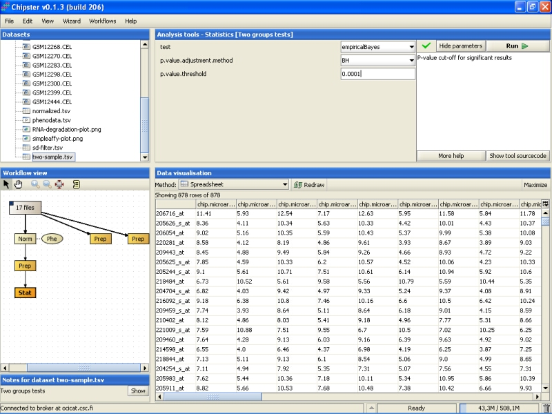The analysis returns a new data set, this time comprising of 96 genes, which is in the accectable range for qtPCR validation:
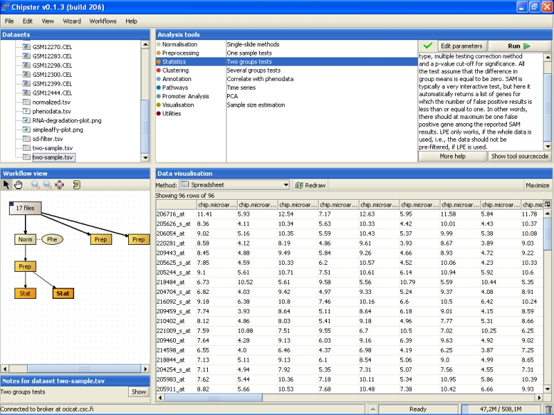Next, the 96 genes found to be statistically very significantly differently expressed between the normal and cancer tissue are annotated. To annotate the genes using the default Affymetrix annotations, select the tool category Annotation and the tool Affymetrix or Illumina gene list:
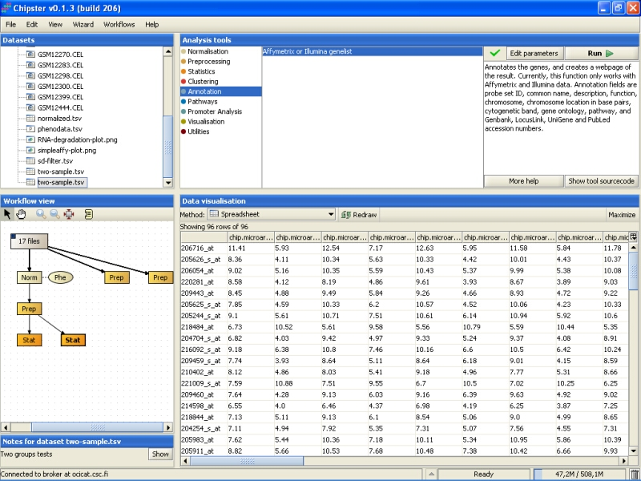The tool returns an HTML page that contains the annotations for the genes. This page is displayed as a new data set labeled Anno in the Workflow view. It can be visualized by double-clicking it:
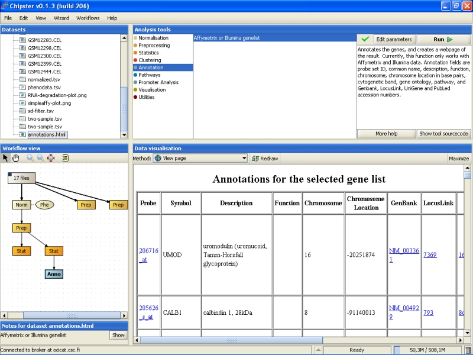You can click on the links on the page to open them in a www-browser. For example, Unigene entry for the UMOD gene display the following webpage:
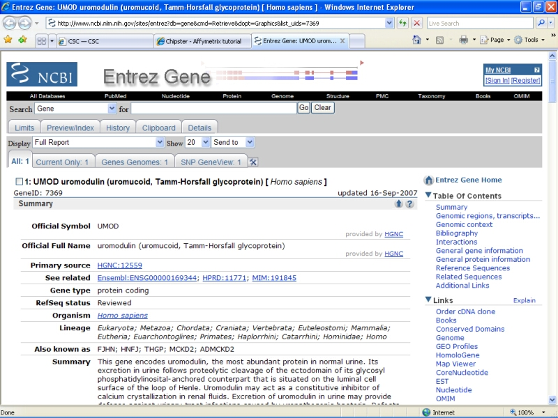In case you want to use the normalized or analyzed data sets in some other programs, you can easily export them. Select the data set from the Workflow view, right-click on it, and select Export from the opening menu:
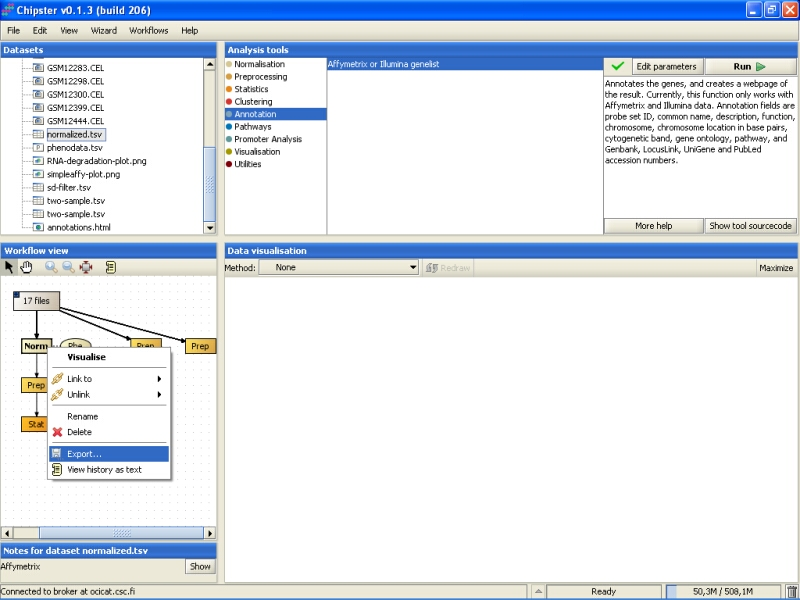Browse to the folder you want to export the data set, and press the Save button:
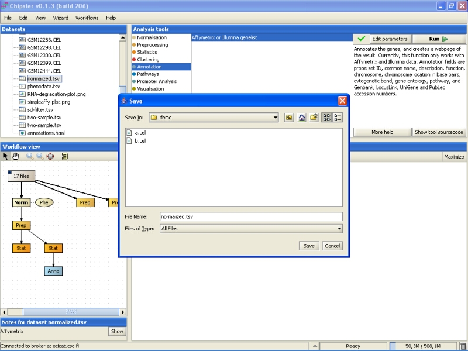The same method can be used for exporting any other file from Chipster, including the images and the HTML page with annotations.
The story continues in the Tutorial - part II, where we will look into more details about annotations, KEGG pathways, GO ontology term enrichment, promoter analysis, and exporting the data to public databases.